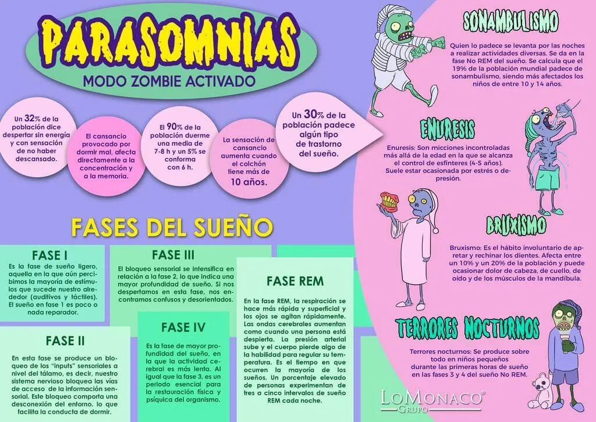

Parasomnias: modo zombie activado

¿Sabías que…?
- Un 32% de la población dice despertar sin energía y con sensación de no haber descansado.
- El cansancio provocado por dormir mal, afecta directamente a la concentración y a la memoria.
- El 90% de la población duerme una media de 7-8 horas y un 5% se conforma con 6 horas.
- La sensación de cansancio aumenta cuando el colchón tiene más de 10 años.
- Un 30% de la población padece algún tipo de trastorno del sueño.
Fases del sueño
Fase I: Es la fase de sueño ligero, aquella en la que aún percibimos la mayoría de estímulos que sucede nuestro alrededor (auditivos y táctiles). El sueño en fase 1 es poco o nada reparador.
Fase II: En esta fase se produce un bloqueo de los “inputs” sensoriales a nivel del tálamo, es decir, nuestro sistema nervioso bloquea las vías de acceso de la información sensorial. Este bloqueo comporta una desconexión del entorno, lo que facilita la conducta de dormir.
Fase III: El bloqueo sensorial se intensifica en relación a la fase 2, lo que indica una mayor profundidad de sueño. Si nos despertamos en esta fase, nos encontramos confusos y desorientados.
Fase IV: Es la fase de mayor profundidad del sueño, en la que la actividad cerebral es más lenta. Al igual que la fase 3, es un periodo esencial para la restauración física y psíquica del organismo.
Fase V: Es la fase REM, la respiración se hace más rápida y superficial y los ojos se agitan rápidamente. Las ondas cerebrales aumentan como cuando una persona está despierta. La presión arterial sube y el cuerpo pierde algo de la habilidad para regular su temperatura. Es el tiempo en que ocurren la mayoría de los sueños. Un porcentaje elevado de personas experimentan de tres a cinco intervalos de sueño REM cada noche.
A continuación, una breve descripción de las parasomnias más comunes y sus principales consecuencias sobre la conducta del durmiente:
Sonambulismo
Quien lo padece se levanta por las noches a realizar actividades diversas. Se da en la fase No REM del sueño. Se calcula que el 19% de la población mundial padece de sonambulismo, siendo más afectados los niños de entre 10 y 14 años.
Enuresis
Son micciones incontroladas más allá de la edad en la que se alcanza el control de esfínteres (4-5 años). Suele estar ocasionada por estrés o depresión.
Bruxismo
Es el hábito involuntario de apretar y rechinar los dientes. Afecta entre un 10% y un 20% de la población y puede ocasionar dolor de cabeza, de cuello, de oído y de los músculos de la mandíbula.
Terrones nocturnos
Se producen sobre todo en niños pequeños durante las primeras horas de sueño entre las fases 3 y 4 del sueño No REM.